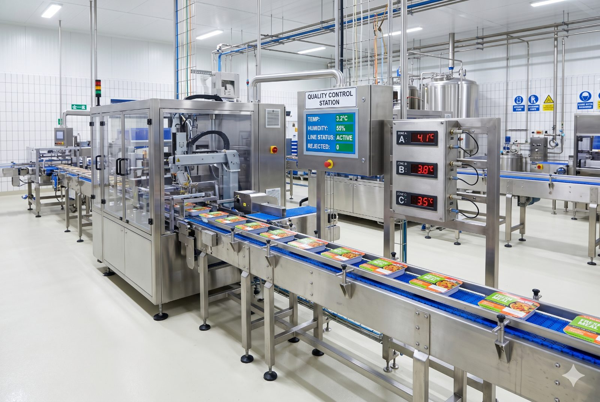

SPC en tiempo real para ingredientes, temperatura y peso. Cumplí HACCP, ISO 22000 y FSSC sin auditorías eternas. Reducí rechazos un 75% y desbloqueá mercados que hoy no podés tocar.

Lo que pasa hoy en tu planta, lado a lado con lo que Datalyzer cambia desde el día 1.
Benchmark interno con plantas equivalentes en LATAM. Cifras reales, no proyecciones de marketing.
Sin módulos genéricos. Cada función pensada para tu vertical, lista para usar.
Gráficos de control multivariables conectados a tus instrumentos. Reglas de Western Electric corriendo en background.
Cuando las reglas de Western Electric detectan una señal en el proceso, el sistema notifica por email y WhatsApp. Intervención mientras el lote todavía está en producción.
Reconstruí cualquier lote en 15 segundos: proveedor, fecha, operario, parámetros, alertas.
Puntos de control críticos versionados, firmas electrónicas, evidencia auditable desde el día 1.
Historial de mediciones, control charts y evidencia de conformidad siempre disponibles y organizados. El sistema tiene los datos — la preparación es cuestión de horas, no semanas.
Capability (Cp/Cpk) por SKU y por línea. Detectás derivas de máquina antes que se manifiesten.
Con Datalyzer, Heineken verifica la calidad de materia prima antes de que lleguen los materiales. La calidad de proveedores se monitorea en tiempo real desde la sede central.
Los proveedores de envases de Heineken en Europa usan distintos sistemas SPC. El reto: centralizar esos datos de calidad y recibirlos antes que el envío físico — porque un cargamento de vidrio defectuoso puede tardar semanas en llegar y el daño ya está hecho.
Se desarrolló un certificado de análisis estándar con datos SPC que cada proveedor carga a un servidor central antes de despachar. Se importa automáticamente a Qualis SPC y da visibilidad inmediata de si el envío puede comprometer calidad o productividad. Medidas preventivas antes de que el camión salga del proveedor.
Leer caso completo en datalyzer.com"Heineken Nederland utiliza las soluciones de Datalyzer para importar los datos de calidad de los proveedores europeos a la base de datos central SPC de nuestra sede central, lo que ofrece la oportunidad de vincular la calidad externa con la calidad interna y la productividad."
RobbertJan Dijkman Senior Packaging Specialist · Heineken Nederland
Cómo es el proceso con cada cliente nuevo.
Mapeamos líneas, SKUs y parámetros críticos con tu equipo.
Una línea corriendo SPC en vivo. Primeros dashboards con datos reales.
Roll-out a toda la planta. Cpk por línea y reportes automáticos.
Sistema auditable y equipo formado. ISO 22000 / FSSC pasable.
Nada de papel, nada de Excel. Las mediciones de tu planta llegan a Datalyzer en tiempo real desde los equipos que ya tenés.
Sin desarrollos adicionales. Templates de evidencia listos para auditoría.
Cargá tus números reales. El cálculo es conservador y usa benchmarks internos del vertical.
Sin marketing. Te conectamos con un experto industrial que conoce alimentos y te muestra el sistema configurado para tu caso.
Acá va el iframe de Calendly cuando me pases el link. Por ahora podés contactar directo abajo.